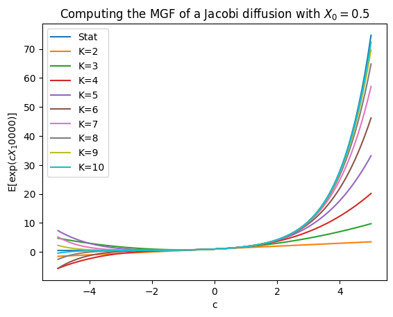

dim=1
b_const=np.zeros(dim)
b_lin=np.zeros((dim,dim))
a_const=np.zeros((dim,dim))
a_lin=np.zeros((dim,dim,dim))
a_quad=np.zeros((dim,dim,dim,dim))
a_const[0]=1
coeff=(b_const,b_lin,a_const,a_lin,a_quad)
x0=np.zeros(dim)
len_max=10
T=1Expected signature of polynomial processes in \((d+1)\)-dimensions
We implement here the formula providing the expecation of the signature of a continuous polynomial process \(X\) in \(d+1\) dimensions.
Auxiliary functions
First, we need to define some maps mapping a multiindex to its lexicographic order and back.
fromwordtonum
fromwordtonum (I, d)
Providing the number corresponding to the multiindex I in a vocabulary of words of letters {0,…,d}.
fromnumtoword
fromnumtoword (n, d)
Providing the multiindex corresponding to the number n in a vocabulary of words of letters {0,…,d}.
fromlentonum
fromlentonum (len_max, d)
Providing the maximal component of a vector with all multiindices of lenght<=len_max.
We introduce then the shuffle product and its vectorial representation.
shuffle
shuffle (a, b)
Input: a,b: multiindices
Output: list of multiindices in a shuffle b
shuffletensor
shuffletensor (len_1, len_2, d)
Input: len_1,len_2: maximal lenght of the input’s multiindices {0,…,d} denotes the set of indices
Output: tensor
From polynomials to linear combinations of the signature
Recall that for every symmetric matrix \(c_2\) \[\begin{align*} p(X_t)&=c_0+ c_1^\top X_t+Tr(c_2 X_tX_t^\top)\\ &=(c_0+c_1^\top X_0+ Tr(c_2 X_0X_0^\top))\pi_0(\mathbb X_t) +(c_1^\top +2X_0^\top c_2 )\pi_1(\mathbb X_t) +2Tr(c_2 \pi_2(\mathbb X_t)). \end{align*}\] Given \(c_0,c_1,c_2\) and \(X_0\) the function polytosig returns a vector \(csig\) such that \[csig^\top vec(\mathbb X^{\leq 2})=p(X_t).\]
polytosig
polytosig (c0, c1, c2, x0)
Input: c0: float c1,c2,x0: array_like
c0,c1,c2 denotes the coefficient of a polynomial parametrized as number, vector, and matrix.
x0 denotes the initial value of the considered process.Output: np.array
coefficients of the truncated signature in the corresponding representationNext, we need to initialize the coefficents. Suppose that the dynamics of a polynomial process \(X\) are given by a drift vector \[b(X_t)^i=b_i+\sum_{j=0}^db_{ij}X_t^j,\] a diffusion matrix \[a(X_t)^{ij}=a_{ij}+\sum_{k=0}^da_{ijk}X_t^k+\sum_{k,h=0}^da_{ijkh}X_t^kX_t^h,\] and an initial condition \(x_0\). Set then \[\begin{align*} b_{const}[i]&=b_i,& b_{lin}[i,j]&=b_{ij},\\ a_{const}[i,j]&=a_{ij},& a_{lin}[i,j,k]&=a_{ijk},& a_{quad}[i,j,k,h]=a_{ijkh}. \end{align*}\] The function polytosigvec maps the coefficients \([b_{const},b_{lin},a_{const},a_{lin},a_{quad}]\) and \(x_0\) to \([bsig,asig]\) such that \[bsig[i]^\top vec(\mathbb X^{\leq 2})=b(X_t)^i\qquad\text{and}\qquad asig[i,j]^\top vec(\mathbb X^{\leq 2})=a(X_t)^{ij}.\]
polytosigvec
polytosigvec (coeff, x0)
Input: coeff: list x0 : array_like
coeff denotes the list of coefficients [b_{const},b_{lin},a_{const},a_{lin},a_{quad}]
x0 denotes the initial value of the processOutput: list list[0] is an np.array with coefficients of the truncated signature in the representation of b(X) list[1] is an np.array with coefficients of the truncated signature in the representation of a(X)
Expected signature of polynomial processes
We are now ready to implement the operator \[Le_I=e_{I'}\# b^{i_{|I|}}+\frac 1 2 e_{I''}\# a^{i_{|I|-1},i_{|I|}}.\] In the vectorial representation \(L\) can be written as a matrix \(matrix(L)\) such that \[matrix(L) vec(e_I)=vec(Le_I).\]
matrixL
matrixL (coeff, x0, len_max, dim)
Input: coeff: list x0 : array_like len_max,dim: float
coeff denotes the list of coefficients [b_{const},b_{lin},a_{const},a_{lin},a_{quad}]
x0 denotes the initial value of the process
len_max and dim denote the desired truncation level and the dimension of X, respectively.Output: np.ndarray
the matrix corresponding to the generator of the signature trucated at level len_max of the corresponding process.Resourcing to the polynomial formula we can now compute the expected signature \(\mathbb E[\mathbb X_T^{\leq len_{max}}].\)
expsig
expsig (coeff, x0, len_max, dim, T)
Input: coeff: list x0 : array_like len_max,dim,T: float
coeff denotes the list of coefficients [b_{const},b_{lin},a_{const},a_{lin},a_{quad}]
x0 denotes the initial value of the process
len_max and dim denote the desired truncation level and the dimension of X, respectively.
T denotes the timeOutput: np.array
vector corresponding to E[Sig(X)_T^{len_max}]To better read the oputput of expsig we also provide a function associating to each non-zero coponent of the expected signature its multiindex. Alternatively, the function expsig_withwords concatenate the two functions.
withwords
withwords (Expsig, dim)
Input: Expsig: array_like dim: float
Expsig denotes the output of the function expsigOutput: list
list of non-zero components of the signature together with the corresponding multiindex.expsig_withwords
expsig_withwords (coeff, x0, len_max, dim, T)
Input: coeff: list x0 : array_like len_max,dim,T: float
coeff denotes the list of coefficients [b_{const},b_{lin},a_{const},a_{lin},a_{quad}]
x0 denotes the initial value of the process
len_max and dim denote the desired truncation level and the dimension of X, respectively.
T denotes the timeOutput: list
list of non-zero components of the signature together with the corresponding multiindex.In one dimension, one can obtain the moments of a process from the expected signature by means of the simple formula \[X_t^k=k!\sum_{i=0}^k\frac{X_0^{k-i}}{(k-i)!}\langle e_0^{\otimes i},\mathbb X_t\rangle.\]
moments
moments (coeff, x0, len_max, dim, T)
Examples
Expected signature and moments of a Brownian motion
As a first step we need to introduce the coefficients of the polynomial process.
Next, we run the proposed code for the expected signature.
Expsig=expsig(coeff,x0,len_max,dim,T)And finally we obtain a readable output.
withwords(Expsig,dim)[[1.0, []],
[0.5, [0, 0]],
[0.125, [0, 0, 0, 0]],
[0.020833333333333332, [0, 0, 0, 0, 0, 0]],
[0.002604166666666666, [0, 0, 0, 0, 0, 0, 0, 0]],
[0.00026041666666666655, [0, 0, 0, 0, 0, 0, 0, 0, 0, 0]]]With the apposite code one can also get the corresponding moments.
moments(coeff,x0,len_max,dim,T)array([ 1., 0., 1., 0., 3., 0., 15., 0., 105., 0., 945.])Time extended 2 dimensional Brownian Motion
As a first step we need to introduce the coefficients of the polynomial process.
dim=3
b_const=np.zeros(dim)
b_lin=np.zeros((dim,dim))
a_const=np.zeros((dim,dim))
a_lin=np.zeros((dim,dim,dim))
a_quad=np.zeros((dim,dim,dim,dim))
b_const[0]=1
a_const[1,1]=1
a_const[2,2]=1
coeff=(b_const,b_lin,a_const,a_lin,a_quad)
x0=np.zeros(dim)
len_max=5
T=1Finally, we run the proposed code with a readable output.
expsig_withwords(coeff,x0,len_max,dim,T)[[1.0, []],
[1.0, [0]],
[0.5, [0, 0]],
[0.5, [1, 1]],
[0.5, [2, 2]],
[0.16666666666666666, [0, 0, 0]],
[0.25, [0, 1, 1]],
[0.25, [0, 2, 2]],
[0.25, [1, 1, 0]],
[0.25, [2, 2, 0]],
[0.04166666666666666, [0, 0, 0, 0]],
[0.08333333333333333, [0, 0, 1, 1]],
[0.08333333333333333, [0, 0, 2, 2]],
[0.08333333333333333, [0, 1, 1, 0]],
[0.08333333333333333, [0, 2, 2, 0]],
[0.08333333333333333, [1, 1, 0, 0]],
[0.125, [1, 1, 1, 1]],
[0.125, [1, 1, 2, 2]],
[0.08333333333333333, [2, 2, 0, 0]],
[0.125, [2, 2, 1, 1]],
[0.125, [2, 2, 2, 2]],
[0.00833333333333333, [0, 0, 0, 0, 0]],
[0.02083333333333333, [0, 0, 0, 1, 1]],
[0.02083333333333333, [0, 0, 0, 2, 2]],
[0.02083333333333333, [0, 0, 1, 1, 0]],
[0.02083333333333333, [0, 0, 2, 2, 0]],
[0.02083333333333333, [0, 1, 1, 0, 0]],
[0.041666666666666664, [0, 1, 1, 1, 1]],
[0.041666666666666664, [0, 1, 1, 2, 2]],
[0.02083333333333333, [0, 2, 2, 0, 0]],
[0.041666666666666664, [0, 2, 2, 1, 1]],
[0.041666666666666664, [0, 2, 2, 2, 2]],
[0.02083333333333333, [1, 1, 0, 0, 0]],
[0.041666666666666664, [1, 1, 0, 1, 1]],
[0.041666666666666664, [1, 1, 0, 2, 2]],
[0.041666666666666664, [1, 1, 1, 1, 0]],
[0.041666666666666664, [1, 1, 2, 2, 0]],
[0.02083333333333333, [2, 2, 0, 0, 0]],
[0.041666666666666664, [2, 2, 0, 1, 1]],
[0.041666666666666664, [2, 2, 0, 2, 2]],
[0.041666666666666664, [2, 2, 1, 1, 0]],
[0.041666666666666664, [2, 2, 2, 2, 0]]]The Jacobi Process
dim=1
b_const=np.zeros(dim)
b_lin=np.zeros((dim,dim))
a_const=np.zeros((dim,dim))
a_lin=np.zeros((dim,dim,dim))
a_quad=np.zeros((dim,dim,dim,dim))
a_lin[0]=1
a_quad[0]=-1
coeff=(b_const,b_lin,a_const,a_lin,a_quad)
x0=np.zeros(dim)
x0[0]=1/2
len_max=10
T=10000#Expsig=
expsig(coeff,x0,len_max,dim,T)
#withwords(Expsig,dim)array([1.00000000e+00, 0.00000000e+00, 1.25000000e-01, 0.00000000e+00,
2.60416667e-03, 0.00000000e+00, 2.17013889e-05, 0.00000000e+00,
9.68812004e-08, 0.00000000e+00, 2.69114446e-10])len_max=20
Moments=moments(coeff,x0,len_max,dim,T)def expc(c):
u=np.ones(len(Moments))
for k in range(len(u)):
u[k]=c**k/math.factorial(k)
return u
space=np.linspace(-5,5,100)
stationary=1/2*(1+np.exp(space))
plt.plot(space,stationary,label=f'Stat');
for j in range(2,11,1):
MGF=np.ones(len(space))
for k in range(len(MGF)):
MGF[k]=np.dot(expc(space[k])[:j],Moments[:j])
plt.plot(space,MGF,label=f'K={j}');
plt.xlabel("c")
plt.ylabel(f'E[exp($cX_{T}$)]')
plt.title(f'Computing the MGF of a Jacobi diffusion with $X_0=${x0[0]}')
plt.legend();